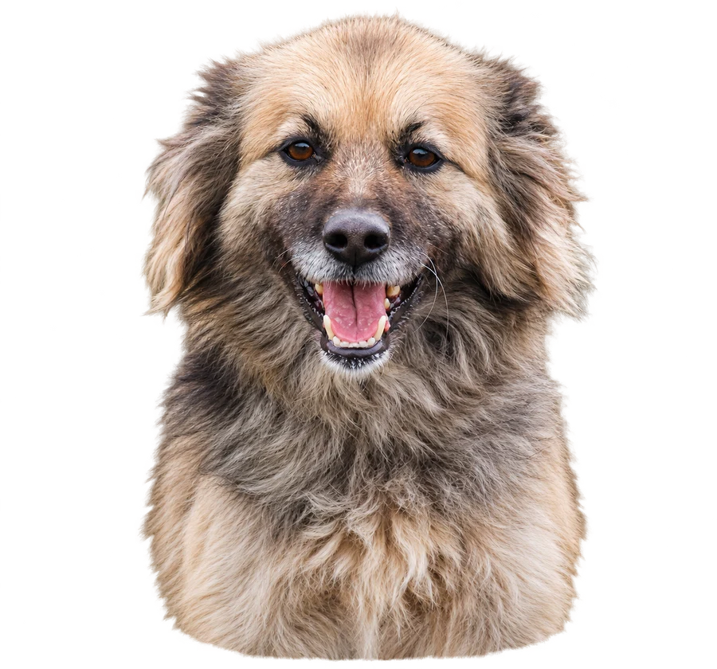

Помощь приюту
Что можно привезти в приют?
Ниже собран список вещей, кормов и медикаментов, которые нужны приюту на постоянной основе. Информацию о срочных и наиболее актуальных потребностях мы публикуем в отдельных постах на стене группы.

Питание для животных
- Сухие корма для собак и кошек — любых марок, включая экономкласс.
- Влажные корма для собак и кошек — паштеты, паучи, консервы любых марок.
- Лечебные корма для животных с заболеваниями ЖКТ (сухие гастрокорма и консервы).
- Мясные продукты — субпродукты, мясная обрезь, куриные шеи.
- Гречневая крупа для варки каш
Вещи для обустройства и содержания собак
- Подстилки: постельное бельё и полотенца б/у, небольшие коврики, пледы, покрывала, шерстяные, вязаные одеяла. Ватные одеяла и матрасы не подходят.
- Амуниция: привязочные цепи длиной 2,5 м, карабины № 7, вертлюги, брезентовые ошейники 35–45 см (обязательно с петлёй для цепи), поводки длиной от 2 м.
- Игрушки любых форм и размеров.
- Посуда: металлические кастрюли, ковшики и глубокие сковороды, пригодные для использования в качестве мисок.
- Защитные воротники и послеоперационные попоны любых размеров.
Хозяйственные товары и инвентарь
Для уборки и поддержания чистоты:
- Тряпки, губки, щётки, веники, совки.
- Вёдра обычные и оцинкованные.
- Мешки для мусора объёмом от 60 л.
- Хозяйственные перчатки — резиновые и трикотажные.
- Бумажные полотенца и туалетная бумага.
- Стиральные порошки, Доместос, пульверизаторы для дезинфицирующих средств
Для работ на территории:
- Лопаты штыковые металлические и пластиковые снеговые, большие волокуши, снегоуборочные скребки.
- Двухколёсные садовые тележки на полупропиленовых колёсах.
- Шуруповёрты и саморезы 3,8×51мм и 4,8×100мм, монтажные уголки 50×50×35×1,8мм.
Лекарства из обычной аптеки
Все животные, поступающие в приют, при необходимости проходят лечение от травм, инфекционных, кожных и паразитарных заболеваний. Некоторые нуждаются в пожизненной терапии. Поэтому помощь лекарствами необходима постоянно.
Антисептики, средства для обработки ран и кожи:
- Перекись водорода, хлоргексидин, повидон-йод (раствор), диоксидин.
- Левомеколь, тетрациклиновая мазь, цинковая мазь, Аргосульфан.
- Метрогил Дента.
Антибиотики и противомикробные препараты:
- Цефтриаксон.
- Амоксиклав / Аугментин (таблетки и суспензия).
- Ципрофлоксацин (таблетки).
- Доксициклин (таблетки).
- Метронидазол (таблетки и раствор).
- Энтерофурил (капсулы и суспензия).
Препараты для пищеварения и ЖКТ:
- Омез, Креон, Фестал.
- Энтеросгель.
- Любые пробиотики.
- Квамател (флаконы для внутривенного введения), Фамотидин.
Противорвотные:
- Церукал / Метоклопрамид (ампулы).
- Ондансетрон.
Противогрибковые препараты:
- Тербинафин (крем).
- Клотримазол.
Для глаз и ушей:
- Тобрекс, Флоксал, Корнерегель.
- Гидрокортизоновая глазная мазь.
- Тетрациклиновая глазная мазь.
- Макситрол.
- Кандибиотик (ушные капли).
Противосудорожные и неврологические препараты:
- Мексидол 5 мл.
- Габапентин 300 мг.
- Паглюферал-1, Паглюферал-2, Паглюферал-3.
- Нейромидин (ампулы, таблетки), его аналоги (Ипидакрин и др.)
- Диакарб.
Другие препараты:
- Циклоферон (ампулы).
- Кетотифен.
- Гептрал, Гептор (капсулы).
- Лидокаин, новокаин.
- Транексамовая кислота для инъекций
- Цианокобаламин
Растворы для инфузий (капельниц):
- Натрия хлорид.
- Глюкоза 5% и 40%.
- Растворы Рингера и Рингера — Локка.
- Маннит
- Дисоль, Трисоль, Ацесоль.
Лекарства из ветеринарной аптеки
Антибиотики:
- Амоксициллин (таблетки и инъекции)— 250, 500, 1000 мг.
- Синуксол (таблетки и инъекции), Кладакса, Энроксил (таблетки и инъекции)
- Кобактан (инъекции).
- Тилозин, Байтрил.
- Стоморджил (таблетки).
Обезболивающие и противовоспалительные:
- Флексопрофен.
- Онсиор.
- Рикарфа 20, 50 и 100 мг.
- Контрапаин, Мелоксивет, Превикокс.
Противорвотные:
- Препараты маропитанта: Маропиталь, Шиерия, Серения (Сирения), Холликалм и аналоги.
Сердечные препараты:
- Ветмедин, Пимопет (препараты пимобендана).
Для суставов и опорно-двигательного аппарата:
- Артрогликан.
Для обработки кожи, ран и ушей:
- Чеми-спрей, Террамицин-спрей.
- Отоксолан (ушные капли).
- Лосьоны для очищения ушей.
Для пищеварения, печени и общего состояния:
- Гепатовет.
- Ветом.
- Дюфалайт.
Противопаразитарные препараты:
- Пиростоп.
- Бравекто (таблетки).
- Симпарика.
- Тиксфли.
- Капли от наружных паразитов.
- Любые антигельминтные препараты для собак и кошек.
Противосудорожные и неврологические препараты:
- Габитабс 200 мг, 400 мг.
- Гапентин 800 мг.
Медицинские расходные материалы
Перевязочные материалы:
- Марлевые салфетки, марля в рулонах.
- Бинты широкие, самофиксирующиеся.
- Лейкопластырь в рулонах шириной 2–3 см.
- Повязки с химотрипсином, Бранолинд.
Для инъекций, капельниц и процедур:
- Шприцы 1, 2, 5, 10 и 20 мл.
- Инсулиновые шприцы.
- Катетеры — розовые, синие, жёлтые.
- Стерильные перчатки размеров S и M.
Для ухода и операций:
- Впитывающие пелёнки и пелёнки для операционного поля.
- Хирургические нити.
Важно
Лекарства и медицинские материалы принимаются в целой упаковке, с действующим сроком годности и соблюдёнными условиями хранения.
Как передать помощь приюту?
Вы можете выбрать любой удобный для вас способ:
Способ 01
Привезти самостоятельно
Помощь можно привезти в приют в любое время и оставить у охранника в сторожке.
Адрес приюта — г. Омск, ул. 2я Учхозная, д.2А (Муниципальный приют)
Способ 02
Заказать на маркетплейсе
Закажите необходимые товары с доставкой в пункт выдачи:
Адрес ПВЗ OZON: Омск, ул. 4-я Заречная, 2А
Адрес ПВЗ Wildberries: Омск, ул. Омская, 209, к1
После того, как придет заказ, отправьте код получения в сообщения группы ВК, чтобы сотрудники приюта могли забрать посылку.
Способ 03
Передать через волонтёров
Если у вас нет возможности самостоятельно приехать в приют, помощь можно передать через наших волонтёров.
Для этого напишите в сообщения группы ВК — мы поможем договориться о передаче.
Спасибо за помощь
Спасибо каждому, кто помогает заботиться о животных приюта!
Даже небольшая помощь имеет большое значение!